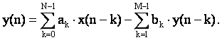

Как известно, уравнение цифрового фильтра (ЦФ) во временной области описывается выражением (прямая форма 1):
|  |
(3.1) |
Если все коэффициенты bk равны нулю, мы получаем уравнение цифрового нерекурсивного фильтра (ЦНФ), или фильтра с конечной импульсной характеристикой (КИХ или FIR – Finite Impulse Response):
 |
(3.2) |
где коэффициенты ak из предыдущей формулы обозначены как h(k) (коэффициенты импульсной характеристики фильтра).
Такой фильтр N-го порядка может быть представлен следующей схемой (рис. 3.1):
Рисунок 3.1 – Граф-схема цифрового нерекурсивного фильтра
Передаточная характеристика этого фильтра описывается уравнением
| (3.3) |
Передаточная функция цифрового рекурсивного фильтра (ЦРФ) или фильтра с бесконечной импульсной характеристикой (БИХ или IIR – Infinite Impulse Response) в Z-области записывается уравнением
| (3.4) |
Кроме прямой формы (3.1) имеется и другая форма (называемая канонической) уравнения ЦРФ с использованием промежуточных переменных d:
| (3.5) |
Обе эти формы (3.1) и (3.5) для случая N = M могут быть представлены следующими схемами (рис. 3.2):
Рисунок 3.2 – Граф-схемы цифровых рекурсивных фильтров
Прямая форма требует 2N+1 коэффициентов и 2N+1 рабочих ячеек для переменных X, Y (переменные x(n), y(n) могут храниться в одной ячейке памяти). При канонической реализации число переменных в два раза меньше (N+2).
Сложный фильтр высокого порядка (рис. 3.3) может быть реализован с помощью комбинации простых полосовых или режекторных фильтров (обычно 2-го порядка). При этом режекторные фильтры соединяются последовательно и каждый следующий вычитает из сигнала свою составляющую в заданной спектральной полосе (рис. 3.4).

Рисунок 3.3 – Передаточная характеристика цифрового фильтра
Рисунок 3.4 – Последовательное соединение фильтров
Передаточная функция ЦРФ при последовательном соединении описывается уравнением
 |
(3.6) |
Уравнение одного фильтра во временной области в канонической форме записывается как
dk(n) = yk-1(n) – β1k dk(n-1) – β2k dk(n-2) , yk(n) = α0k dk(n) + α1k dk(n-1) + α2k dk(n-2) , |
(3.7) |
где k изменяется от 1 до (М-1)/2. Входное значение y0(n) = x(n), выходное значение y(M-1)/2(n) = y(n), а структура такого фильтра для двух каскадов представлена в следующем виде (рис. 3.5).
Рисунок 3.5 – Последовательное соединение цифровых рекурсивных фильтров (каноническая форма)
Для прямой формы реализации структура этого же фильтра выглядит следующим образом (рис. 3.6):
Рисунок 3.6 – Последовательное соединение цифровых рекурсивных фильтров (прямая форма)
Учитывая, что данные предыстории между каскадами совпадают
(y1(n-k)=x1(n-k)), структура фильтра может быть преобразована к следующему виду (рис. 3.7).
Рисунок 3.7 – Последовательное соединение цифровых рекурсивных фильтров (модифицированная прямая форма)
При такой реализации сразу исчезает недостаток прямой формы, связанный с двойным количеством ячеек предыстории. В данной реализации общее число ячеек предыстории при прямой форме только на 3 больше, чем при канонической. При программной реализации такого фильтра необходимо учитывать то, что сдвигать по памяти нужно только отсчеты предыстории входных значений, поскольку выходные значения будут сдвинуты при работе следующего каскада (в котором они становятся входными) и только после последнего каскада необходимо сдвинуть два значения y(n-1) и y(n).
Рекомендуемое расположение промежуточных данных в памяти показано на рис. 3.8.
Рисунок 3.8 – Расположение промежуточных данных в памяти
; Линейная программа ЦРФ (каноническая форма) 4-го порядка ; с последовательным соединением 2-х каскадов .data D2N .WORD 0 . . . D1NM2 .WORD 0 A01 .WORD 0 A11 .WORD 0 A21 .WORD 0 B11 .WORD 0 B21 .WORD 0 A02 .WORD 0 . . . B22 .WORD 0 XN .WORD 0 .text START LD #XN, DP ; текущая страница с XN SSBX FRCT ; режим умножения дробных чисел RSBX OVM ; нет коррекции переполн. в АЛУ ORM #1, PMST ; коррекция перепол. при записи STM #D2NM1, AR2 ; AR2:= адрес d(n-(N-1)) RPTZ A, #4 ; А:=0 и повторить 5 раз STL A, *AR2+ ; обнуление предыстории di(n-k) RPT #10-1 ; повторить 10 раз,AR2:=адр.a01 MVPD CA01, *AR2+ ; пересылка коэффициентов WAIT BC WAIT, BIO ; ожидание готовности PORTR PA2, XN ; ввод из порта x(n) ; вычисление d1(n) LD XN, 16, A ; x(n) в старшую часть акк.А LD D1NM1, T ; Т:=d1(n-1) MAS B11, A ; A:=A-T*b11=A-b11*d1(n-1) LD D1NM2, T ; T:=d1(n-2) MASR B21, A ; A:=A-T*b21=A-b21*d1(n-2) STH A, D1N ; d1(n) ; вычисление y1(n) MPY A21, A ; A:=T*a21=a21*d1(n-2) LTD D1NM1 ; T:=d1(n-1), d1(n-1) -> d1(n-2) MAC A11, A ; A:=A+T*a11=A+a11*d1(n-1) LTD D1N ; T:=d1(n), d1(n) -> d1(n-1) MAC A01, A ; A:=A+T*a01=A+a01*d1(n)=y1(n) ; вычисление d2(n) LD D2NM1, T ; Т:=d2(n-1) MAS B12, A ; A:=A-T*b12=A-b12*d2(n-1) LD D2NM2, T ; T:=d1(n-2) MASR B22, A ; A:=A-T*b22=A-b22*d2(n-2) STH A, D2N ; d2(n) ; вычисление y(n) MPY A22, A ; A:=T*a22=a22*d2(n-2) LTD D2NM1 ; T:=d2(n-1), d2(n-1) -> d2(n-2) MAC A12, A ; A:=A+T*a12=A+a12*d2(n-1) LTD D2N ; T:=d2(n), d2(n) -> d2(n-1) MAC A02, A ; A:=A+T*a02=A+a02*d2(n)=y(n) STH B, XN ; y(n) -> x(n) BD WAIT ; задержанный переход на WAIT PORTW XN, PA2 ;2w вывод в порт y(n) ; коэффициенты в памяти программ CA01 .WORD 01F05h ; 0.242342 CA11 .WORD 02B75h ; 0.339521 CA21 .WORD 01EFDh ; 0.242117 CB11 .WORD 0394Dh ; 0.447687 CB21 .WORD 0D889h ;-0.308310 CA02 .WORD 062F1h ; 0.772990 CA12 .WORD 026DBh ; 0.303581 CA22 .WORD 062EDh ; 0.772887 CB12 .WORD 0FEF7h ;-0.008080 CB22 .WORD 090EEh ;-0.867723
- Изучить теоретические сведения по теме лабораторной работы (подразд. 3.2).
- Получить у преподавателя задание для выполнения практической части работы.
- Согласно заданию написать, оттранслировать и выполнить программу.
- Продемонстрировать результат трансляции и работы программы преподавателю.
- Оформить и защитить отчет по лабораторной работе.
- Цель работы и исходные данные.
- Описание алгоритма работы программы.
- Листинг программы с комментариями.
- Выводы по работе.